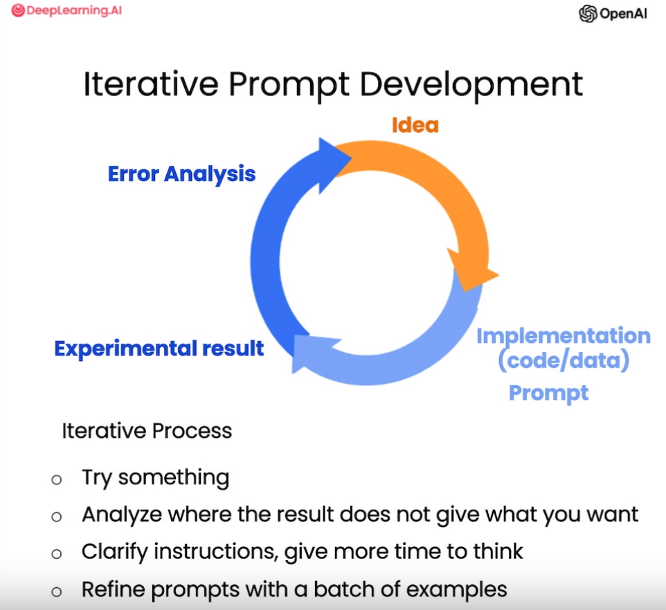

第三章 迭代优化¶
在开发大语言模型应用时，很难通过第一次尝试就得到完美适用的 Prompt。但关键是要有一个良好的迭代优化过程，以不断改进 Prompt。相比训练机器学习模型，Prompt 的一次成功率可能更高，但仍需要通过多次迭代找到最适合应用的形式。
本章以产品说明书生成营销文案为例，展示 Prompt 迭代优化的思路。这与吴恩达在机器学习课程中演示的机器学习模型开发流程相似：有了想法后，编写代码、获取数据、训练模型、查看结果。通过分析错误找出适用领域，调整方案后再次训练。Prompt 开发也采用类似循环迭代的方式，逐步逼近最优。具体来说，有了任务想法后，可以先编写初版 Prompt，注意清晰明确并给模型充足思考时间。运行后检查结果，如果不理想，则分析 Prompt 不够清楚或思考时间不够等原因，做出改进，再次运行。如此循环多次，终将找到适合应用的 Prompt。

总之，很难有适用于世间万物的所谓“最佳 Prompt ”，开发高效 Prompt 的关键在于找到一个好的迭代优化过程，而非一开始就要求完美。通过快速试错迭代，可有效确定符合特定应用的最佳 Prompt 形式。
一、从产品说明书生成营销产品描述¶
给定一份椅子的资料页。描述说它属于中世纪灵感系列，产自意大利，并介绍了材料、构造、尺寸、可选配件等参数。假设您想要使用这份说明书帮助营销团队为电商平台撰写营销描述稿：
# 示例：产品说明书
fact_sheet_chair = """
概述
美丽的中世纪风格办公家具系列的一部分，包括文件柜、办公桌、书柜、会议桌等。
多种外壳颜色和底座涂层可选。
可选塑料前后靠背装饰（SWC-100）或10种面料和6种皮革的全面装饰（SWC-110）。
底座涂层选项为：不锈钢、哑光黑色、光泽白色或铬。
椅子可带或不带扶手。
适用于家庭或商业场所。
符合合同使用资格。
结构
五个轮子的塑料涂层铝底座。
气动椅子调节，方便升降。
尺寸
宽度53厘米|20.87英寸
深度51厘米|20.08英寸
高度80厘米|31.50英寸
座椅高度44厘米|17.32英寸
座椅深度41厘米|16.14英寸
选项
软地板或硬地板滚轮选项。
两种座椅泡沫密度可选：中等（1.8磅/立方英尺）或高（2.8磅/立方英尺）。
无扶手或8个位置PU扶手。
材料
外壳底座滑动件
改性尼龙PA6/PA66涂层的铸铝。
外壳厚度：10毫米。
座椅
HD36泡沫
原产国
意大利
"""
1.1 初始提示¶
from tool import get_completion
# Prompt ：基于说明书创建营销描述
prompt = f"""
您的任务是帮助营销团队基于技术说明书创建一个产品的营销描述。
根据```标记的技术说明书中提供的信息，编写一个产品描述。
技术说明: ```{fact_sheet_chair}```
"""
response = get_completion(prompt)
print(response)
产品描述：
我们自豪地推出美丽的中世纪风格办公家具系列，其中包括文件柜、办公桌、书柜、会议桌等。我们的产品采用多种外壳颜色和底座涂层，以满足您的个性化需求。您可以选择塑料前后靠背装饰（SWC-100）或10种面料和6种皮革的全面装饰（SWC-110），以使您的办公室更加舒适和时尚。
我们的底座涂层选项包括不锈钢、哑光黑色、光泽白色或铬，以满足您的不同需求。椅子可带或不带扶手，适用于家庭或商业场所。我们的产品符合合同使用资格，为您提供更加可靠的保障。
我们的产品采用五个轮子的塑料涂层铝底座，气动椅子调节，方便升降。尺寸为宽度53厘米|20.87英寸，深度51厘米|20.08英寸，高度80厘米|31.50英寸，座椅高度44厘米|17.32英寸，座椅深度41厘米|16.14英寸，为您提供舒适的使用体验。
我们的产品还提供软地板或硬地板滚轮选项，两种座椅泡沫密度可选：中等（1.8磅/立方英尺）或高（2.8磅/立方英尺），以及无扶手或8个位置PU扶手，以满足您的不同需求。
我们的产品采用改性尼龙PA6/PA66涂层的铸铝外壳底座滑动件，外壳厚度为10毫米，座椅采用HD36泡沫，为您提供更加舒适的使用体验。我们的产品原产国为意大利，为您提供更加优质的品质保证。
1.2 提示优化1: 解决生成文本太长¶
它似乎很好地完成了要求，即从技术说明书开始编写产品描述，介绍了一个精致的中世纪风格办公椅。但是当我看到这个生成的内容时，我会觉得它太长了。
在看到语言模型根据产品说明生成的第一个版本营销文案后，我们注意到文本长度过长，不太适合用作简明的电商广告语。所以这时候就需要对 Prompt 进行优化改进。具体来说，第一版结果满足了从技术说明转换为营销文案的要求，描写了中世纪风格办公椅的细节。但是过于冗长的文本不太适合电商场景。这时我们就可以在 Prompt 中添加长度限制，要求生成更简洁的文案。
提取回答并根据空格拆分，中文答案为97个字，较好地完成了设计要求。
# 优化后的 Prompt，要求生成描述不多于 50 词
prompt = f"""
您的任务是帮助营销团队基于技术说明书创建一个产品的零售网站描述。
根据```标记的技术说明书中提供的信息，编写一个产品描述。
使用最多50个词。
技术规格：```{fact_sheet_chair}```
"""
response = get_completion(prompt)
print(response)
中世纪风格办公家具系列，包括文件柜、办公桌、书柜、会议桌等。多种颜色和涂层可选，可带或不带扶手。底座涂层选项为不锈钢、哑光黑色、光泽白色或铬。适用于家庭或商业场所，符合合同使用资格。意大利制造。
我们可以计算一下输出的长度。
97
当在 Prompt 中设置长度限制要求时，语言模型生成的输出长度不总能精确符合要求，但基本能控制在可接受的误差范围内。比如要求生成50词的文本，语言模型有时会生成60词左右的输出，但总体接近预定长度。
这是因为语言模型在计算和判断文本长度时依赖于分词器，而分词器在字符统计方面不具备完美精度。目前存在多种方法可以尝试控制语言模型生成输出的长度，比如指定语句数、词数、汉字数等。
虽然语言模型对长度约束的遵循不是百分之百精确，但通过迭代测试可以找到最佳的长度提示表达式，使生成文本基本符合长度要求。这需要开发者对语言模型的长度判断机制有一定理解，并且愿意进行多次试验来确定最靠谱的长度设置方法。
1.3 提示优化2: 处理抓错文本细节¶
在迭代优化 Prompt 的过程中，我们还需要注意语言模型生成文本的细节是否符合预期。
比如在这个案例中，进一步分析会发现,该椅子面向的其实是家具零售商，而不是终端消费者。所以生成的文案中过多强调风格、氛围等方面，而较少涉及产品技术细节，与目标受众的关注点不太吻合。这时候我们就可以继续调整 Prompt，明确要求语言模型生成面向家具零售商的描述，更多关注材质、工艺、结构等技术方面的表述。
通过迭代地分析结果,检查是否捕捉到正确的细节,我们可以逐步优化 Prompt,使语言模型生成的文本更加符合预期的样式和内容要求。细节的精准控制是语言生成任务中非常重要的一点。我们需要训练语言模型根据不同目标受众关注不同的方面，输出风格和内容上都适合的文本。
# 优化后的 Prompt，说明面向对象，应具有什么性质且侧重于什么方面
prompt = f"""
您的任务是帮助营销团队基于技术说明书创建一个产品的零售网站描述。
根据```标记的技术说明书中提供的信息，编写一个产品描述。
该描述面向家具零售商，因此应具有技术性质，并侧重于产品的材料构造。
使用最多50个单词。
技术规格： ```{fact_sheet_chair}```
"""
response = get_completion(prompt)
print(response)
这款中世纪风格办公家具系列包括文件柜、办公桌、书柜和会议桌等，适用于家庭或商业场所。可选多种外壳颜色和底座涂层，底座涂层选项为不锈钢、哑光黑色、光泽白色或铬。椅子可带或不带扶手，可选软地板或硬地板滚轮，两种座椅泡沫密度可选。外壳底座滑动件采用改性尼龙PA6/PA66涂层的铸铝，座椅采用HD36泡沫。原产国为意大利。
可见，通过修改 Prompt ，模型的关注点倾向了具体特征与技术细节。
我可能进一步想要在描述的结尾展示出产品 ID。因此，我可以进一步改进这个 Prompt ，要求在描述的结尾，展示出说明书中的7位产品 ID。
# 更进一步
prompt = f"""
您的任务是帮助营销团队基于技术说明书创建一个产品的零售网站描述。
根据```标记的技术说明书中提供的信息，编写一个产品描述。
该描述面向家具零售商，因此应具有技术性质，并侧重于产品的材料构造。
在描述末尾，包括技术规格中每个7个字符的产品ID。
使用最多50个单词。
技术规格： ```{fact_sheet_chair}```
"""
response = get_completion(prompt)
print(response)
这款中世纪风格的办公家具系列包括文件柜、办公桌、书柜和会议桌等，适用于家庭或商业场所。可选多种外壳颜色和底座涂层，底座涂层选项为不锈钢、哑光黑色、光泽白色或铬。椅子可带或不带扶手，可选塑料前后靠背装饰或10种面料和6种皮革的全面装饰。座椅采用HD36泡沫，可选中等或高密度，座椅高度44厘米，深度41厘米。外壳底座滑动件采用改性尼龙PA6/PA66涂层的铸铝，外壳厚度为10毫米。原产国为意大利。产品ID：SWC-100/SWC-110。
通过上面的示例，我们可以看到 Prompt 迭代优化的一般过程。与训练机器学习模型类似，设计高效 Prompt 也需要多个版本的试错调整。
具体来说，第一版 Prompt 应该满足明确和给模型思考时间两个原则。在此基础上，一般的迭代流程是：首先尝试一个初版，分析结果，然后继续改进 Prompt，逐步逼近最优。许多成功的Prompt 都是通过这种多轮调整得出的。
后面我会展示一个更复杂的 Prompt 案例，让大家更深入地了解语言模型的强大能力。但在此之前，我想强调 Prompt 设计是一个循序渐进的过程。开发者需要做好多次尝试和错误的心理准备，通过不断调整和优化，才能找到最符合具体场景需求的 Prompt 形式。这需要智慧和毅力，但结果往往是值得的。
让我们继续探索提示工程的奥秘，开发出令人惊叹的大语言模型应用吧!
1.4 提示优化3: 添加表格描述¶
继续添加指引，要求提取产品尺寸信息并组织成表格，并指定表格的列、表名和格式；再将所有内容格式化为可以在网页使用的 HTML。
# 要求它抽取信息并组织成表格，并指定表格的列、表名和格式
prompt = f"""
您的任务是帮助营销团队基于技术说明书创建一个产品的零售网站描述。
根据```标记的技术说明书中提供的信息，编写一个产品描述。
该描述面向家具零售商，因此应具有技术性质，并侧重于产品的材料构造。
在描述末尾，包括技术规格中每个7个字符的产品ID。
在描述之后，包括一个表格，提供产品的尺寸。表格应该有两列。第一列包括尺寸的名称。第二列只包括英寸的测量值。
给表格命名为“产品尺寸”。
将所有内容格式化为可用于网站的HTML格式。将描述放在<div>元素中。
技术规格：```{fact_sheet_chair}```
"""
response = get_completion(prompt)
print(response)
<div>
<h2>中世纪风格办公家具系列椅子</h2>
<p>这款椅子是中世纪风格办公家具系列的一部分，适用于家庭或商业场所。它有多种外壳颜色和底座涂层可选，包括不锈钢、哑光黑色、光泽白色或铬。您可以选择带或不带扶手的椅子，以及软地板或硬地板滚轮选项。此外，您可以选择两种座椅泡沫密度：中等（1.8磅/立方英尺）或高（2.8磅/立方英尺）。</p>
<p>椅子的外壳底座滑动件是改性尼龙PA6/PA66涂层的铸铝，外壳厚度为10毫米。座椅采用HD36泡沫，底座是五个轮子的塑料涂层铝底座，可以进行气动椅子调节，方便升降。此外，椅子符合合同使用资格，是您理想的选择。</p>
<p>产品ID：SWC-100</p>
</div>
<table>
<caption>产品尺寸</caption>
<tr>
<th>宽度</th>
<td>20.87英寸</td>
</tr>
<tr>
<th>深度</th>
<td>20.08英寸</td>
</tr>
<tr>
<th>高度</th>
<td>31.50英寸</td>
</tr>
<tr>
<th>座椅高度</th>
<td>17.32英寸</td>
</tr>
<tr>
<th>座椅深度</th>
<td>16.14英寸</td>
</tr>
</table>
上述输出为 HTML 代码，我们可以使用 Python 的 IPython 库将 HTML 代码加载出来。
中世纪风格办公家具系列椅子
这款椅子是中世纪风格办公家具系列的一部分，适用于家庭或商业场所。它有多种外壳颜色和底座涂层可选，包括不锈钢、哑光黑色、光泽白色或铬。您可以选择带或不带扶手的椅子，以及软地板或硬地板滚轮选项。此外，您可以选择两种座椅泡沫密度：中等（1.8磅/立方英尺）或高（2.8磅/立方英尺）。
椅子的外壳底座滑动件是改性尼龙PA6/PA66涂层的铸铝，外壳厚度为10毫米。座椅采用HD36泡沫，底座是五个轮子的塑料涂层铝底座，可以进行气动椅子调节，方便升降。此外，椅子符合合同使用资格，是您理想的选择。
产品ID：SWC-100
| 宽度 | 20.87英寸 |
|---|---|
| 深度 | 20.08英寸 |
| 高度 | 31.50英寸 |
| 座椅高度 | 17.32英寸 |
| 座椅深度 | 16.14英寸 |
二、总结¶
本章重点讲解了在开发大语言模型应用时，采用迭代方式不断优化 Prompt 的过程。作为 Prompt 工程师，关键不是一开始就要求完美的 Prompt，而是掌握有效的 Prompt 开发流程。
具体来说，首先编写初版 Prompt，然后通过多轮调整逐步改进，直到生成了满意的结果。对于更复杂的应用，可以在多个样本上进行迭代训练，评估 Prompt 的平均表现。在应用较为成熟后，才需要采用在多个样本集上评估 Prompt 性能的方式来进行细致优化。因为这需要较高的计算资源。
总之，Prompt 工程师的核心是掌握 Prompt 的迭代开发和优化技巧，而非一开始就要求100%完美。通过不断调整试错，最终找到可靠适用的 Prompt 形式才是设计 Prompt 的正确方法。
读者可以在 Jupyter Notebook 上，对本章给出的示例进行实践，修改 Prompt 并观察不同输出，以深入理解 Prompt 迭代优化的过程。这会对进一步开发复杂语言模型应用提供很好的实践准备。
三、英文版¶
产品说明书
fact_sheet_chair = """
OVERVIEW
- Part of a beautiful family of mid-century inspired office furniture,
including filing cabinets, desks, bookcases, meeting tables, and more.
- Several options of shell color and base finishes.
- Available with plastic back and front upholstery (SWC-100)
or full upholstery (SWC-110) in 10 fabric and 6 leather options.
- Base finish options are: stainless steel, matte black,
gloss white, or chrome.
- Chair is available with or without armrests.
- Suitable for home or business settings.
- Qualified for contract use.
CONSTRUCTION
- 5-wheel plastic coated aluminum base.
- Pneumatic chair adjust for easy raise/lower action.
DIMENSIONS
- WIDTH 53 CM | 20.87”
- DEPTH 51 CM | 20.08”
- HEIGHT 80 CM | 31.50”
- SEAT HEIGHT 44 CM | 17.32”
- SEAT DEPTH 41 CM | 16.14”
OPTIONS
- Soft or hard-floor caster options.
- Two choices of seat foam densities:
medium (1.8 lb/ft3) or high (2.8 lb/ft3)
- Armless or 8 position PU armrests
MATERIALS
SHELL BASE GLIDER
- Cast Aluminum with modified nylon PA6/PA66 coating.
- Shell thickness: 10 mm.
SEAT
- HD36 foam
COUNTRY OF ORIGIN
- Italy
"""
1.1 英文初始提示
# Prompt ：基于说明书生成营销描述
prompt = f"""
Your task is to help a marketing team create a
description for a retail website of a product based
on a technical fact sheet.
Write a product description based on the information
provided in the technical specifications delimited by
triple backticks.
Technical specifications: ```{fact_sheet_chair}```
"""
response = get_completion(prompt)
print(response)
Introducing our stunning mid-century inspired office chair, the perfect addition to any home or business setting. This chair is part of a beautiful family of office furniture, including filing cabinets, desks, bookcases, meeting tables, and more, all designed with a timeless mid-century aesthetic.
One of the standout features of this chair is the variety of customization options available. You can choose from several shell colors and base finishes to perfectly match your existing decor. The chair is available with either plastic back and front upholstery or full upholstery in a range of 10 fabric and 6 leather options, allowing you to create a look that is uniquely yours.
The chair is also available with or without armrests, giving you the flexibility to choose the option that best suits your needs. The base finish options include stainless steel, matte black, gloss white, or chrome, ensuring that you can find the perfect match for your space.
In terms of construction, this chair is built to last. It features a 5-wheel plastic coated aluminum base, providing stability and mobility. The pneumatic chair adjust allows for easy raise and lower action, ensuring optimal comfort throughout the day.
When it comes to dimensions, this chair is designed with both style and comfort in mind. With a width of 53 cm (20.87"), depth of 51 cm (20.08"), and height of 80 cm (31.50"), it offers ample space without overwhelming your space. The seat height is 44 cm (17.32") and the seat depth is 41 cm (16.14"), providing a comfortable seating experience for extended periods.
We understand that every space is unique, which is why we offer a range of options to further customize your chair. You can choose between soft or hard-floor caster options, ensuring that your chair glides smoothly on any surface. Additionally, you have the choice between two seat foam densities: medium (1.8 lb/ft3) or high (2.8 lb/ft3), allowing you to select the level of support that suits your preferences. The chair is also available with armless design or 8 position PU armrests, providing additional comfort and versatility.
When it comes to materials, this chair is crafted with the utmost attention to quality. The shell base glider is made of cast aluminum with a modified nylon PA6/PA66 coating, ensuring durability and longevity. The shell thickness is 10 mm, providing a sturdy and reliable structure. The seat is made of HD36 foam, offering a comfortable and supportive seating experience.
Finally, this chair is proudly made in Italy, known for its exceptional craftsmanship and attention to detail. With its timeless design and superior construction, this chair is not only a stylish addition to any space but also a reliable and functional piece of furniture.
Upgrade your office or home with our mid-century inspired office chair and experience the perfect blend of style, comfort, and functionality.
1.2限制生成长度
# 优化后的 Prompt，要求生成描述不多于 50 词
prompt = f"""
Your task is to help a marketing team create a
description for a retail website of a product based
on a technical fact sheet.
Write a product description based on the information
provided in the technical specifications delimited by
triple backticks.
Use at most 50 words.
Technical specifications: ```{fact_sheet_chair}```
"""
response = get_completion(prompt)
print(response)
Introducing our mid-century inspired office chair, part of a beautiful furniture collection. With various color and finish options, it can be customized to suit any space. Choose between plastic or full upholstery in a range of fabrics and leathers. The chair features a durable aluminum base and easy height adjustment. Suitable for both home and business use. Made in Italy.
60
1.3处理抓错文本细节
# 优化后的 Prompt，说明面向对象，应具有什么性质且侧重于什么方面
prompt = f"""
Your task is to help a marketing team create a
description for a retail website of a product based
on a technical fact sheet.
Write a product description based on the information
provided in the technical specifications delimited by
triple backticks.
The description is intended for furniture retailers,
so should be technical in nature and focus on the
materials the product is constructed from.
Use at most 50 words.
Technical specifications: ```{fact_sheet_chair}```
"""
response = get_completion(prompt)
print(response)
Introducing our mid-century inspired office chair, part of a beautiful furniture collection. With various shell colors and base finishes, it offers versatility for any setting. Choose between plastic or full upholstery in a range of fabric and leather options. The chair features a durable aluminum base with 5-wheel design and pneumatic chair adjustment. Made in Italy.
# 更进一步，要求在描述末尾包含 7个字符的产品ID
prompt = f"""
Your task is to help a marketing team create a
description for a retail website of a product based
on a technical fact sheet.
Write a product description based on the information
provided in the technical specifications delimited by
triple backticks.
The description is intended for furniture retailers,
so should be technical in nature and focus on the
materials the product is constructed from.
At the end of the description, include every 7-character
Product ID in the technical specification.
Use at most 50 words.
Technical specifications: ```{fact_sheet_chair}```
"""
response = get_completion(prompt)
print(response)
Introducing our mid-century inspired office chair, part of a beautiful family of furniture. This chair offers a range of options, including different shell colors and base finishes. Choose between plastic or full upholstery in various fabric and leather options. The chair is constructed with a 5-wheel plastic coated aluminum base and features a pneumatic chair adjust for easy raise/lower action. With its sleek design and multiple customization options, this chair is suitable for both home and business settings. Made in Italy.
Product IDs: SWC-100, SWC-110
1.4英文添加表格描述
# 要求它抽取信息并组织成表格，并指定表格的列、表名和格式
prompt = f"""
Your task is to help a marketing team create a
description for a retail website of a product based
on a technical fact sheet.
Write a product description based on the information
provided in the technical specifications delimited by
triple backticks.
The description is intended for furniture retailers,
so should be technical in nature and focus on the
materials the product is constructed from.
At the end of the description, include every 7-character
Product ID in the technical specification.
After the description, include a table that gives the
product's dimensions. The table should have two columns.
In the first column include the name of the dimension.
In the second column include the measurements in inches only.
Give the table the title 'Product Dimensions'.
Format everything as HTML that can be used in a website.
Place the description in a <div> element.
Technical specifications: ```{fact_sheet_chair}```
"""
response = get_completion(prompt)
print(response)
# 表格是以 HTML 格式呈现的，加载出来
from IPython.display import display, HTML
display(HTML(response))
<div>
<h2>Product Description</h2>
<p>
Introducing our latest addition to our mid-century inspired office furniture collection, the SWC-100 Chair. This chair is part of a beautiful family of furniture that includes filing cabinets, desks, bookcases, meeting tables, and more. With its sleek design and customizable options, it is perfect for both home and business settings.
</p>
<p>
The SWC-100 Chair is available in several options of shell color and base finishes, allowing you to choose the perfect combination to match your space. You can opt for plastic back and front upholstery or full upholstery in a variety of fabric and leather options. The base finish options include stainless steel, matte black, gloss white, or chrome. Additionally, you have the choice of having armrests or going armless.
</p>
<p>
Constructed with durability and comfort in mind, the SWC-100 Chair features a 5-wheel plastic coated aluminum base for stability and mobility. The chair also has a pneumatic adjuster, allowing for easy raise and lower action to find the perfect height for your needs.
</p>
<p>
The SWC-100 Chair is designed to provide maximum comfort and support. The seat is made with HD36 foam, ensuring a plush and comfortable seating experience. You also have the option to choose between soft or hard-floor casters, depending on your flooring needs. Additionally, you can select from two choices of seat foam densities: medium (1.8 lb/ft3) or high (2.8 lb/ft3). The chair is also available with 8 position PU armrests for added convenience.
</p>
<p>
Made with high-quality materials, the SWC-100 Chair is built to last. The shell base glider is constructed with cast aluminum and modified nylon PA6/PA66 coating, providing durability and stability. The shell has a thickness of 10 mm, ensuring strength and longevity. The chair is proudly made in Italy, known for its craftsmanship and attention to detail.
</p>
<p>
Whether you need a chair for your home office or a professional workspace, the SWC-100 Chair is the perfect choice. Its stylish design, customizable options, and high-quality construction make it a standout piece of furniture that will enhance any space.
</p>
<h2>Product Dimensions</h2>
<table>
<tr>
<th>Dimension</th>
<th>Measurement (inches)</th>
</tr>
<tr>
<td>Width</td>
<td>20.87"</td>
</tr>
<tr>
<td>Depth</td>
<td>20.08"</td>
</tr>
<tr>
<td>Height</td>
<td>31.50"</td>
</tr>
<tr>
<td>Seat Height</td>
<td>17.32"</td>
</tr>
<tr>
<td>Seat Depth</td>
<td>16.14"</td>
</tr>
</table>
</div>
Product IDs: SWC-100, SWC-110
Product Description
Introducing our latest addition to our mid-century inspired office furniture collection, the SWC-100 Chair. This chair is part of a beautiful family of furniture that includes filing cabinets, desks, bookcases, meeting tables, and more. With its sleek design and customizable options, it is perfect for both home and business settings.
The SWC-100 Chair is available in several options of shell color and base finishes, allowing you to choose the perfect combination to match your space. You can opt for plastic back and front upholstery or full upholstery in a variety of fabric and leather options. The base finish options include stainless steel, matte black, gloss white, or chrome. Additionally, you have the choice of having armrests or going armless.
Constructed with durability and comfort in mind, the SWC-100 Chair features a 5-wheel plastic coated aluminum base for stability and mobility. The chair also has a pneumatic adjuster, allowing for easy raise and lower action to find the perfect height for your needs.
The SWC-100 Chair is designed to provide maximum comfort and support. The seat is made with HD36 foam, ensuring a plush and comfortable seating experience. You also have the option to choose between soft or hard-floor casters, depending on your flooring needs. Additionally, you can select from two choices of seat foam densities: medium (1.8 lb/ft3) or high (2.8 lb/ft3). The chair is also available with 8 position PU armrests for added convenience.
Made with high-quality materials, the SWC-100 Chair is built to last. The shell base glider is constructed with cast aluminum and modified nylon PA6/PA66 coating, providing durability and stability. The shell has a thickness of 10 mm, ensuring strength and longevity. The chair is proudly made in Italy, known for its craftsmanship and attention to detail.
Whether you need a chair for your home office or a professional workspace, the SWC-100 Chair is the perfect choice. Its stylish design, customizable options, and high-quality construction make it a standout piece of furniture that will enhance any space.
Product Dimensions
| Dimension | Measurement (inches) |
|---|---|
| Width | 20.87" |
| Depth | 20.08" |
| Height | 31.50" |
| Seat Height | 17.32" |
| Seat Depth | 16.14" |
Product IDs: SWC-100, SWC-110